File: 001020.gt.txt (if the image is defective, simply delete all Arabic text and the line will be excluded)
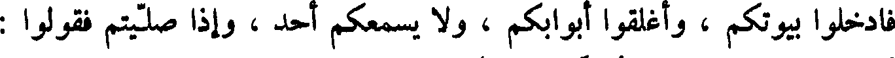
فادخلوا بيوتكم ، وأغلقوا أبوابكم ، ولا يسمعكم أحد ، وإذا صليتم فقولوا:
File: 001021.gt.txt (if the image is defective, simply delete all Arabic text and the line will be excluded)
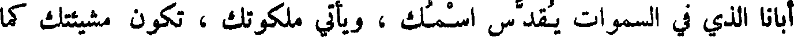
أبانا الذي في السموات يقدس اسمك ، ويأتي ملكوتك ، تكون مشيئتك كما
File: 001022.gt.txt (if the image is defective, simply delete all Arabic text and the line will be excluded)
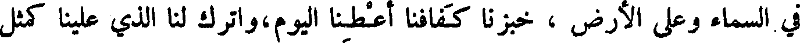
في السماء وعلى الأرض ، خبزنا كفافنا اعطنا اليوم ، واترك لنا الذي علينا كمثل
File: 001023.gt.txt (if the image is defective, simply delete all Arabic text and the line will be excluded)
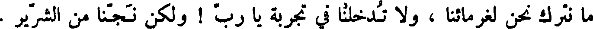
ما نترك نحن لغرمائنا ، و لا تدخلنا في تجربة يا رب ! ولكن نجنا من الشرير .
File: 001024.gt.txt (if the image is defective, simply delete all Arabic text and the line will be excluded)
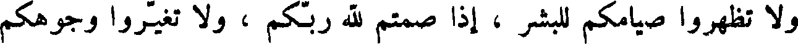
ولا تظهروا صيامكم للبشر ، أذا صمتم لله ربكم ، ولا تغيروا وجوهكم
File: 001025.gt.txt (if the image is defective, simply delete all Arabic text and the line will be excluded)
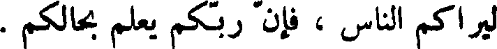
ليراكم الناس ، فان ربكم يعلم بحالكم .
File: 001026.gt.txt (if the image is defective, simply delete all Arabic text and the line will be excluded)
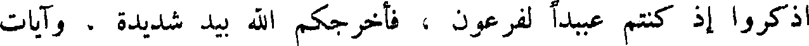
اذكروا إذ كنتم عبيدا لفرعون ، فأخرجكم الله بيد شديدة ، وآيات
File: 001027.gt.txt (if the image is defective, simply delete all Arabic text and the line will be excluded)
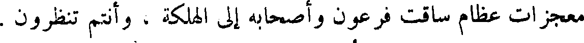
معجزات عظام ساقت فرعون وأصحابه إلى الهلكة ، وأنتم تنظرون .
File: 001028.gt.txt (if the image is defective, simply delete all Arabic text and the line will be excluded)
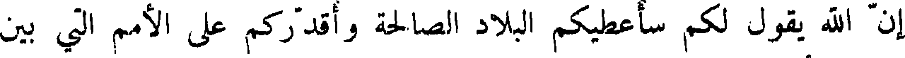
أن الله يقول لكم سأعطيكم البلاد الصالحة وأقدركم على الأمم التي بين
File: 001029.gt.txt (if the image is defective, simply delete all Arabic text and the line will be excluded)
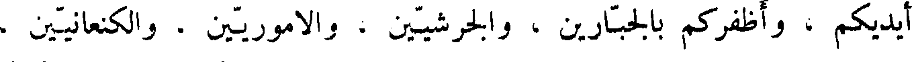
أيديكم ، وأظفركم بالجبارين ، والجرشيين ، والاموريين ، والكنعانيين ،
File: 001030.gt.txt (if the image is defective, simply delete all Arabic text and the line will be excluded)
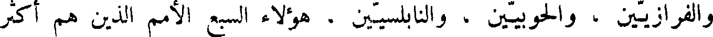
والفرازيين ، والحوبيين ، والنابلسيين ، هؤلاء السبع الأمم الذين هم اكثر
File: 001031.gt.txt (if the image is defective, simply delete all Arabic text and the line will be excluded)
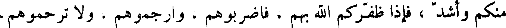
منكم واشد ، فإذا ظفركم الله بهم ، فاضربوهم ، وارجموهم ، و لا ترحموهم.
File: 001032.gt.txt (if the image is defective, simply delete all Arabic text and the line will be excluded)
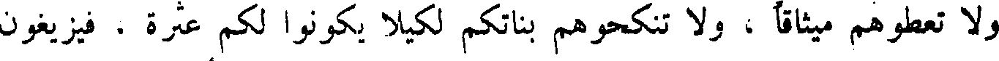
و لا تعطوهم ميثاقا ، و لا تنكحوهم بناتكم لكيلا يكونوا لكم عثرة ، فيزيغون
File: 001033.gt.txt (if the image is defective, simply delete all Arabic text and the line will be excluded)
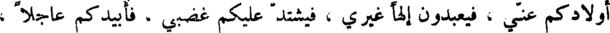
أولادكم عني ، فيعبدون أليها غيري ، فيشتد عليكم غضبي ، فأبيدكم عاجلا ،
File: 001034.gt.txt (if the image is defective, simply delete all Arabic text and the line will be excluded)
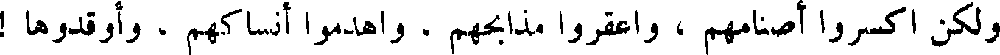
ولكن اكسروا أصنامهم ، واعقروا مذابحهم ، واهدموا أنساكهم ، وأوقدوها !
File: 001035.gt.txt (if the image is defective, simply delete all Arabic text and the line will be excluded)
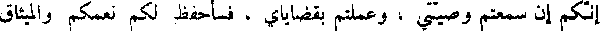
إنكم إن سمعتم وصيتي ، وعملتم بقضاياي ، فسأحفظ لكم نعمكم والميثاق
File: 001036.gt.txt (if the image is defective, simply delete all Arabic text and the line will be excluded)
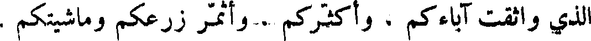
الذي واثقت آباءكم ، وأكثركم وأثمر زرعكم وماشيتكم .
File: 001037.gt.txt (if the image is defective, simply delete all Arabic text and the line will be excluded)
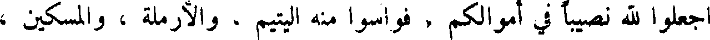
اجعلوا لله نصيبا في أموالكم ، فواسوا منه اليتيم ، والأرملة ، والمسكين ،
File: 001038.gt.txt (if the image is defective, simply delete all Arabic text and the line will be excluded)
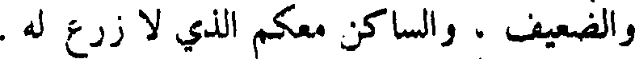
والضعيف ، والساكن معكم الذي لا زرع له .
File: 001039.gt.txt (if the image is defective, simply delete all Arabic text and the line will be excluded)
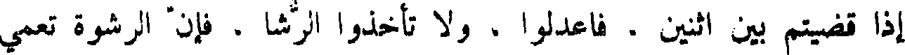
إذا قضيتم بين اثنين . فاعدلوا ن و لا تأخذوا الرشا ، فإن الرشوة تعمي
File: 001040.gt.txt (if the image is defective, simply delete all Arabic text and the line will be excluded)
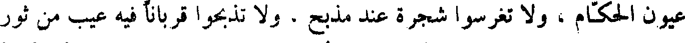
عيون الحكام ، و لا تغرسوا شجرة عند مذبح . و لا تذبحوا قربانا فيه عيب من ثور
File: 001041.gt.txt (if the image is defective, simply delete all Arabic text and the line will be excluded)
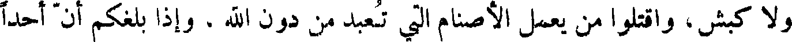
و لا كبش ، واقتلوا من يعمل الأصنام التي تعبد من دون الله ، وإذا بلغكم أن أحدا
File: 001042.gt.txt (if the image is defective, simply delete all Arabic text and the line will be excluded)
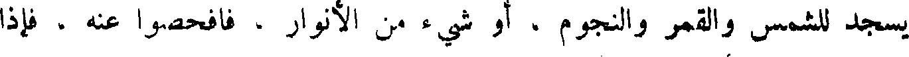
يسجد للشمس والقمر والنجوم ، أو شيء من الأنوار ، فافحصوا عنه ، فإذا
File: 001043.gt.txt (if the image is defective, simply delete all Arabic text and the line will be excluded)
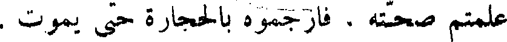
علمتم صحته . فارجموه بالحجارة حتى يموت .
File: 001044.gt.txt (if the image is defective, simply delete all Arabic text and the line will be excluded)
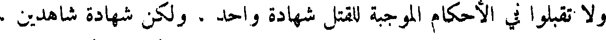
و لا تقبلوا في الأحكام الموجبة للقتل شهادة واحد ، ولكن شهادة شاهدين .
File: 001045.gt.txt (if the image is defective, simply delete all Arabic text and the line will be excluded)
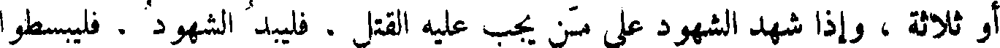
أو ثلاثة ، وإذا شهد الشهود على من يجب عليه القتل . فليبد الشهود . فليبسطوا
File: 001046.gt.txt (if the image is defective, simply delete all Arabic text and the line will be excluded)
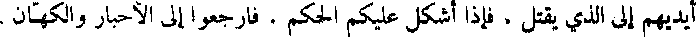
أيديهم إلى الذي يقتل ، فإذا أشكل عليكم الحكم ز فارجعوا إلى الأحبار والكهان .
File: 001047.gt.txt (if the image is defective, simply delete all Arabic text and the line will be excluded)
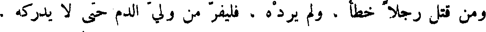
ومن قتل رجلا خطا ، ولم يرده ، فليفر من ولي الدم حتى لا يدركه .
File: 001048.gt.txt (if the image is defective, simply delete all Arabic text and the line will be excluded)
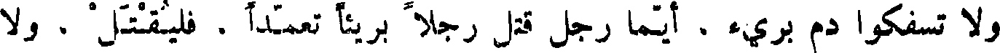
و لا تسفكوا دم بريء ، أيما رجل قتل رجلا بريئا تعمدا ، فليقتل ، و لا
File: 001049.gt.txt (if the image is defective, simply delete all Arabic text and the line will be excluded)
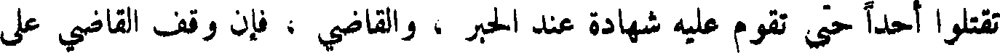
تقتلوا أحدا حتى تقوم عليه شهادة عند الحبر ، والقاضي ، فإن وقف القاضي على
To Save: `Ctrl+s`, make sure to choose `Webpage, complete`!